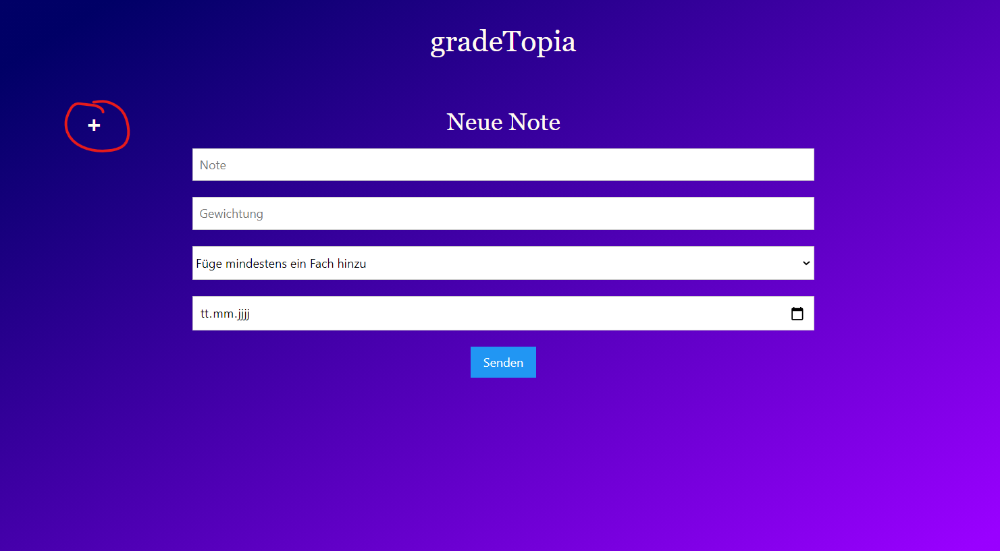
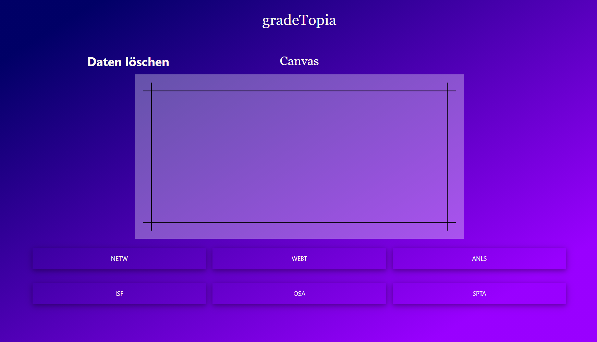

Information

Um gradeTopia zu verwenden, musst du ein oder mehrere Fächer hinzufügen. Wechsle dafür zum Menüpunkt Formular und klicke auf das Plus. Daraufhin sollte dir das Formular für das erstellen der Fächer angezeigt werden. Wiederhole den Prozess beliebig oft.


Den errechneten Schnitt kannst du anschauen wenn du auf den Menüpunkt Canvas gehst. Ergibt die Summe der Gewichtungen eines Fachs genau 100%, siehst du den genauen Schnitt. Beträgt die Summe weniger als 100%, siehst du die Variationsspanne deines Schnittes bei einem Notensystem von 1 - 6. Klicke auf das gewünschte Fach unterhalb des Fachs.
-
+
Daten löschen